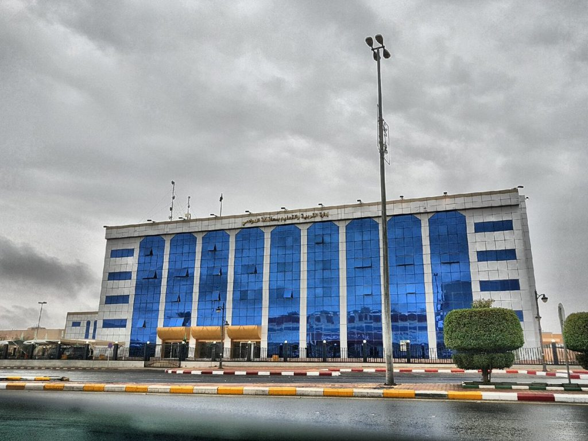
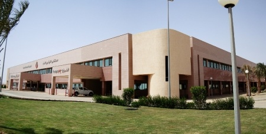
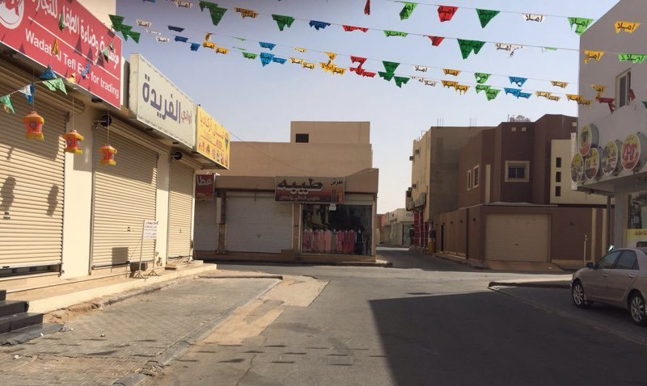
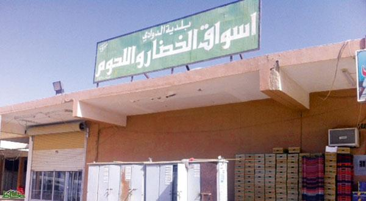

هنا نرصد تاريخ موجز عن المدينة وعن موقعها بين الماضي والحاضر
الدوادمي.. هي محافظة تقع في منطقة الرياض وتقع معظم أراضيها تقع ضمن نطاق ما يسمى بالدرع العربي, ويبلغ أعلى
ارتفاع صخري لمحافظة الدوادمي 1307 أمتار في جبل النير في أقصى الغرب، كما يبلغ أقل ارتفاع سهلي لها 660متراً في أقصى الشمال الشرقي.
سميت داورد سابقاً. أما تسمية الدوادمي جاءت متأخرة تاريخياً حيث لم يرد لها ذكر في المعاجم الجغرافية واللغوية المتقدمة مع وجود أسماء لمواضع قريبة من الدوادمي ومحيطة بها.
أقدم نص ورد فيه ذكر الداودمي في التواريخ المحلية جاء في حوادث عام 1215 هـ عند ابن بشر.
وفي سبب تسميتها بالدوادمي أكثر من قول، ويشير فيلبي إلى أن الكتابات السبئية الموجودة في جبل مأسل الجمح غرب الدوادمي - تشير إلى إقليم مودام أو مودام واستنبط أن يكون
اسم الدوادمي الأصلي الذي كان يدعى من حيث الأصل (داءِ - ورد) وهو الاسم القديم و يعني (بئر المرض) ذلك أن مستوطنيه الأوائل الذين سكنوا الوادي ماتوا على أثر حمى محلية أصابتهم،
ثم حور الاسم إلى دوا - آدمي أي رغبة إنسان.
ومع قيام الدولة السعودية كانت الدوادمي من المدن ذات الأهمية في عملية التوسعة لأنها تجمع بين قبائل عدة أبرزهم قبائل قحطان وقبيلة عتيبة وغيرهم من قبائل وعائلات كبيرة قطنت شقراء و الشعراء وكان لهم دوراً ايضاً في تطور المدينة ويظهر ذلك في بناء الملك عبد العزيز لقصر خاص به هناك
تطورت الدوادمي مع الزمن فكانت هي المدينة المختارة بين المدن حولها لتكون البوابة للتطور والتقدم منذ 1370 وأن تكون مفتاح النهضة بدلاً من المدينة المركزية وقتها "الشعراء". حيث أفتتحت أول مدرسة ابتدائية في الدوادمي عام 1368هـ، وأول مدرسة متوسطة عام 1375هـ، وأول مدرسة ثانوية عام 1386هـ، ويوجد في محافظة الدوادمي الآن القطاعات التعليمية التالية: إدارة للتربية والتعليم (بنين)، إدارة للتربية والتعليم (بنات).
ويوما بعد يوم استمرت الدوادمي بالتطور شيئاً فشيئاً فخصص لها الاهتمام والمال لتكون مدينة مركزية لما حولها وأنشأت المدارس بكافة المراحل والمستشفى العام "القديم" بالدوادمي وأسواق الخضروات و الملابس والقرطاسيات ومعهد "المعرفة" كأول معهد لتعليم الحاسب الآلي في المدينة.
وكبرت شيئاً فشيئاً من حيث المقام والمساحة بأيدي قاطنيها من مختلف القبائل و الجنسيات حتى أصبحت مركزاً تجارياً وتعليميا وصحياً لمن حولها.ونقلت المستشفى التي فيها الى مبنى أكبر ليسع اعداد أكبر وغير مبنى المحافظة إلى مبنى أوسع وأشمل وأُقيم فرع لجامعة شقراء فيها والتي بدورها افتتحت مختلف الكليات مع مرور الوقت لتوفير مختلف العلوم لأبنائها وأبناء المدن المجاورة.
  ولم يكن ذلك الا نتيجة لجهود العديد من الشخصيات الذين نقلوها من مستوى لآخر سواء بشكل مباشر أو غير مباشر ولكن ولا شك في ذلك أنهم أثروا على الشكل الحالي للمدينة ولما وصلت له من تقدم وتطور وأن تكون مركزأ لجميع المدن حولها وهنا نذكر بعضهم على سبيل المثال لا الحصر وذكرهم لا يقصد به تمجيداً لهم ولكن إثباتاً لأثرهم, اتفق أحدهم على نفعه أو لم يفعل ومع ذلك لا يختلف أحد على ما قدموه للمدينة فمنهم :
محمد الحميضي
أكبر مساهم في تطوير البنية التحتية والمشاريع التنموية والصرف الصحي والمباني الاجتماعية وتطوير كثير من المساجد.
الشيخ محمد بن علي بن عيد
فقد استطاع بفقهه المستنير أن يجمع حوله الكثير الذين تعلموا منه علوم الدين والفقه.. كما انه ساهم في تطوير نظم كتابة العدل في المحافظة
المهندس محمد عبدالباقي
من قادة حركة تطوير محطات التليفيزيون وتحويلها ونقل البث من أرضي إلى فضائي عن طريق تغيير المحطات والاعتماد على الاقمار الصناعية.
سعد بن محمد اليحيى
قاد حركة التقدم الصحي ببناء المستشفى الجديد والمستوصفات في مختلف اتجاهات المحافظة وتطوير التخصصات والمنشآت الخاصة بالموظفين وسكن هيئة التمريض وغيرها.
الأستاذ خالد سعيد
من الأوائل اللذين علموا الحاسب الآلي وتقنيات المكتبات والسكرتارية بالمحافظة فخرج من تحت يده الجيل الأول القابل للتمكين من أبناء المحافظة. كما أن له مساهمة في تطوير وحوسبة عمل المكتبات بالمحافظة ومحافظات أخرى .
الأستاذ عبدالله سعد الضويان
غير البنية التعليمية في المحافظة باعتماد حركة المباني الحكومية الحديثة وتدريب منسوبي التعليم على التقنيات الحديثة ونقل المدارس من المباني المستأجرة إلى حكومية وإدخال تقنيات معامل العلوم الطبيعية ومعامل الحاسب.
الشيخ سعد الطخيس
له حظ كبير من العمل الخيري في المحافظة فلقد طورها على مر السنين وقاد جمعية البر وعمل على توسيع نشاطها الخيري وإعالة أسر اليتامى والمطلقات وتوفير كافة أوجه المساعدة للمحتاجين
ابراهيم العرفج
أول من أشار بالتمديد العمراني للمحافظة وقاده بالدخل المحدود وسيرتي وعمل على بناء الحي الصناعي وتطويره واخراجه خارج حدود المحافظة.
وغيرهم الكثير كالشيخ صالح الحمادي الذي قاد مكتب رعاية الجاليات وأدخل 8 لغات في نظمها وكان سبب لدخول الآلاف للدين الإسلامي أو فهد الحسيني رحمه الله الذي قاد القطاع الخاص في
تطوير الخدمات الصحية وغيرهم الكثير مما يصعب علينا حصرهم فسبحان من أحاط بعلمه كل شيء ومن جل أن يسو أو يخطئ فقد نكون
لم نذكر من له أيضاً فضل عظيم لهذه المدينة ولكن كما قلت هذا فقط على سبيل الذكر لا الحصر .
أصبحت المدينة الآن بمكانة المقصد لما حولها لما فيها من منتزهات وأسواق كبيرة وخدمات متقدمة.